Click on images to enlarge
_SM.jpg){kind=link}
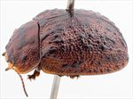
Male, Cowra, New South Wales
{kind=link}
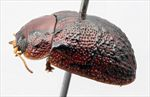
Male, Wilpena, South Australia
{kind=link}
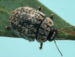
Male, Mildura, S.W. New South Wales
{kind=link}
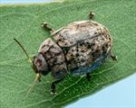
Male, Pikedale, S.E. Queensland
{kind=link}
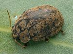
Male, Tibooboora, N.W. New South Wales
{kind=link}
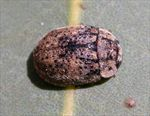
Male, Melrose, South Australia
{kind=link}
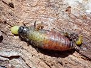
Larva (4th instar), Wilcannia, New South Wales
{kind=link}
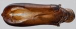
Aedeagus, dorsal view (St George, S.E. Queensland)
{kind=link}
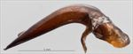
Aedeagus, lateral view (St George, S.E. Queensland)
![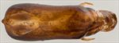Aedeagus, dorsal view (Yarramulla, North Queensland) [QM]](assets/image/Ta87/Ta87_AdQM-076a_SM.jpg){kind=link}

Aedeagus, dorsal view (Yarramulla, North Queensland) [QM]
![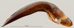Aedeagus, lateral view (Yarramulla, North Queensland) [QM]](assets/image/Ta87/Ta87_AdQM-076b_SM.jpg){kind=link}

Aedeagus, lateral view (Yarramulla, North Queensland) [QM]
{kind=link}
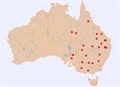
Distribution
Name
Trachymela whittonensis (Blackburn)
Reference specimen
2017-016, Narrandera, southern New South Wales
Adult Description
Length: ♂ 6.0–7.1(7.4) mm (n=32), ♀ 6.1–7.7(8.0) mm (n=33).
Colouration:
- Head: mid- to dark reddish-brown with variable areas of black, sometimes confined to around antennal insertions, more commonly extending in a band along fronto-clypeal suture, sometimes extending anteriorly towards clypeus and/or posteriorly as far as level with centre of eye; mandibles substantially black or at least with black tips; labrum yellow-brown; antennomeres 1–5 straw-brown, 7–11 similar or grading fractionally to slightly darker.
- Pronotum: brown, concolorous with head, with black maculae in the form of a black line of uneven thickness on each side of discal area extending from anterior to posterior edge, in some specimens connected by oblique dark lines resulting in an "M"-shaped mark with its base on posterior margin; rarely, a thin black line present on midline of pronotum; a round black macula present in centre behind outside edge of each eye.
- Scutellum: very dark brown or black, less often paler brown with lateral edges broadly lined in darker brown.
- Elytra: brown, concolorous with pronotum; a short black ridge extends posteriorly from base centred between scutellum and humeral callus, continuing the black line on pronotum; many small to medium-sized black verrucae scattered over almost the whole surface, often aligned longitudinally to form series, less often aligning just behind antero-median depression to form a thin, interrupted transverse black ridge; punctures fractionally darker than interstices; humeral callus black.
- Venter & Legs: head dark brown to black, gula sometimes slightly paler; thoracic ventrites dark brown, abdominal ventrites similar or fractionally paler; inside surface of elytral epipleura usually completely or substantially black, less often brown.
- Cuticular Wax: mostly light brown and very unevenly distributed over much of surface of head, pronotum, and elytra, sometimes darker brown and denser; streaks of a much lighter, greyish colour present along lateral margins of pronotum and in two bands extending longitudinally along elytra, one near margin of disc, the other situated halfway between it and suture; a small spot of this greyish colour usually present at base of elytra, on either side of scutellum.
Morphology:
- Shape: rather flattened (height = 36–46% BL), greatest height viewed laterally in posterior half, thoracic ventrites usually extend below elytral margin.
- Head: punctures moderately sized (pd ≈ 2–2.5× ef) and relatively evenly and densely distributed, much finer punctures present on interstices; antennae short (AL/BL: ♂ 39–42%, ♀ 33–35%), filiform.
- Pronotum: almost evenly curved transversely, often with a marked explanation very close to lateral margin; foveal depression very shallow or absent with a very marked and almost round elevated area in middle; discal area very slightly rugulose, usually bounded laterally by a slightly raised (black) ridge; punctures clearly impressed and quite evenly and densely to more sparsely (South Australian specimens) distributed in discal area, size fractionally larger (rarely slightly smaller in South Australian specimens) than those on head, much finer punctures scattered among them, becoming coarser from foveal depression to lateral margins; front margins join lateral margins in a smoothly rounded right angle, with lateral margin curving smoothly and very gradually towards rear margin.
- Scutellum: punctured, punctures fractionally smaller than those on adjacent area of pronotum, sometimes very shallow and almost obsolete.
- Elytra: surface evenly curved transversely, very lightly curved longitudinally in anterior half, then more strongly curved; punctures large and distinct and relatively evenly distributed on anterior half, with much smaller punctures scattered sparingly on interstices; many smooth, elevated verrucae, some with small central punctures, scattered over elytral surface, surface continuous under humeral callus; posterior third of marginal area prominently concave, separated from discal area by a row of small verrucae (often partially merged), with a similar but shorter row close to elytral margin near apex; vertical extension of epipleura small (HCE/PW = 0.29–0.34).
- Venter: prosternal process narrowest anteriorly to almost parallel-sided, closed anteriorly; short setae sparsely distributed over prosternal process, absent from mesoventrite; a single seta on anterior and median trochanter; front edge of metaventrite bevelled, rounded; inner edge of posterior of epipleura lacking setae.
Male Genitalia (Aedeagus):
- Dimensions: moderate-sized (LPE = 31–35% BL).
- Dorsal view: shaft either almost parallel-sided for most of length (South Australian specimens) to clearly broader at ostium from where sides converge towards apex in a smooth arc; dorsal surface with well-defined dorso-median channel and dorsolateral channels resulting in two long dorsal ostial processes protruding far towards apex in tear-shaped ostial depression; tip small and smoothly triangular.
- Lateral view: shaft curved sharply through about 65° near basal sulcus then ventral surface almost straight to apex, dorsal surface straight for about half this distance, then converging evenly towards ventral surface, tip deflexed.
Immature Stages
- Eggs: Unknown.
- Larvae: See illustration.
Similar species
- Ta79: this Western Australian species is very similar to, and may be the same as, Ta87 – see discussion of differences there.
- Ta86:
- Ta132: this very similar species can be differentiated from Ta87 by the pronotal black markings, which in Ta87 always feature a black line on each side of discal area that runs almost the full length from anterior to posterior margins, whereas in Ta132 it is abbreviated to less than half the length from the anterior margin to the posterior. Ta87 has at most a black spot in the foveal area, while Ta132 often has more extensive black markings there. The antennae of males of Ta132 are shorter than those of Ta87, though in females their sizes overlap substantially.
- Ta126:
- Ta57: where this species and Ta87 overlap in their geographical range, they can appear very similar, being of similar size and both having brown cuticular wax interspersed with patches of grey. Both species utilize hosts in the box group of eucalypts (Symphyomyrtus: Adnataria). They can be readily distinguished by the width of the epipleura, with that of Ta57 being larger (HCE/PW = 0.37–0.39).
- Ta105: this similarly-sized species overlaps with Ta87 in southern NSW and Victoria. It differs by having its verrucae more discrete and evenly spaced over the elytra, by lacking the black longitudinal ridges on the lateral edges of disc of pronotum, and by having the inside surface of the vertical epipleura brown.
Notes
- Taxonomy: The identification of Ta87 as Trachymela whittonensis (Blackburn) is by comparison with the type specimen in the Natural History Museum, London (BMNH).
- Host Associations: Ta87 has been collected from several species of Eucalyptus. Almost all records are from the box group (Symphyomyrtus: Adnataria) and include E. coolabah (n=11), E. largiflorens (n=2), E. intertexta (n=4), unidentified box species (n=7) and a single record from E. crebra. There are 3 records (at a single location) from E. camaldulensis (Symphyomyrtus: Exsertaria) and one record from E. aromaphloia (Symphyomyrtus: Maidenaria) – these are likely host misidentifications or incidental.
- Morphological Variation: There is considerable variation in several characters across its broad distributional range. The South Australian specimens (as well as ones from far northwestern New South Wales and western Queensland) differ slightly in several characters from specimens collected in eastern New South Wales and southern Queensland, viz. the puncturation of the disc of the pronotum is less dense and the punctures are smaller, the verrucae on the elytra are smaller and include more that are aligned laterally. Additionally, they differ in the cuticular wax being more uniform in colour, with the greyish streaks present mostly as faint lines on the elytra along VR2, VR4 and the discal margin.
A specimen from Pikedale, S.E. Queensland differs in several respects from typical Ta87: the verrucae just behind the antero-median depression merge to form a transverse ridge that is almost uninterrupted, the vertical extension of the epipleura is rather larger than typical (HCE/PW = 0.344) and the shortest antennal segment is at around A10 rather than about A7 or A8. The aedeagus, though very similar in shape and dimensions to that of typical Ta87 specimens, has a slightly broader membranous section forming the rear of the ostium.
The North Queensland specimen is essentially identical to typical Ta87 in all respects.
Copyright © 2026. All rights reserved.